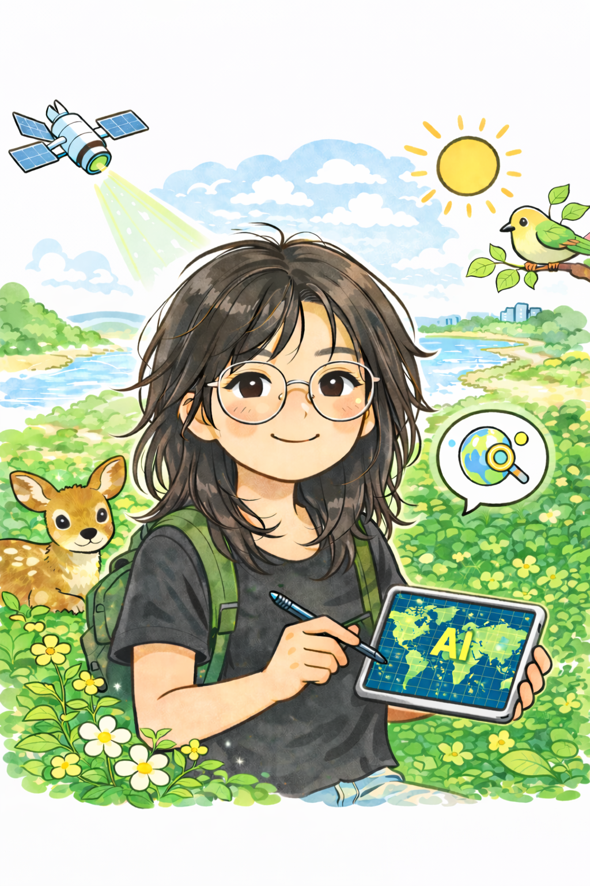

Ph.D. Student
Lula (Feifei) Yang
Ph.D. Student · Year 1
Geography & Sustainability
Her research uses geospatial data science to investigate environmental health, spatial equity, urban systems, and human–environment interactions.